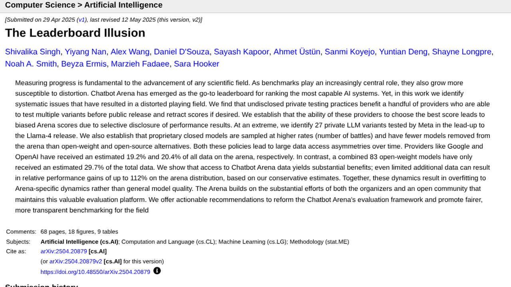

H ay un gesto que repetimos todos cuando sale un modelo nuevo: bajar hasta la tabla de resultados y mirar quién gana. Es un atajo razonable — alguien ha medido, hay números, parece que la discusión está zanjada. El problema es que esa tabla no es lo que parece. No es un termómetro: es un examen, y como todo examen tiene a alguien que elige las preguntas, alguien que decide cómo se corrigen y alguien a quien le conviene el resultado. Normalmente las tres personas trabajan en la misma empresa.
Esta guía no va de qué modelo es mejor — eso lo tratamos en la comparativa de ChatGPT, Claude y Gemini. Va de aprender a leer la tabla: qué mide de verdad, por qué un examen se estropea con el tiempo, cómo se puede trabajar un ranking sin mentir en ningún dato, y qué puedes hacer en cinco minutos para que esos números te sirvan de algo. Todos los casos que aparecen aquí son públicos y verificables, y están citados.
1. Qué es exactamente un benchmark (y qué no mide nunca)
Un benchmark son dos cosas: un conjunto fijo de tareas con solución conocida, y una forma automática de decidir si la respuesta es correcta. Nada más. El porcentaje que ves es la proporción de esas tareas que el modelo resolvió según ese corrector automático.
De esa definición salen las tres limitaciones que explican casi todo lo demás. La primera: las tareas tienen que poder corregirse solas, así que se eligen las que tienen una respuesta única y comprobable — una opción correcta entre cuatro, un test que pasa o no pasa, un número exacto. Lo que tú le pides a la IA casi nunca es así. «Resume esta reunión y dime qué tengo que hacer» no tiene una respuesta correcta que una máquina pueda verificar, y por eso no hay un benchmark que lo mida bien.
La segunda: el conjunto es fijo y público. Es lo que permite comparar modelos entre sí, y es también lo que lo arruina a medio plazo, porque un examen que lleva años publicado en internet acaba dentro de los datos de entrenamiento de los modelos que luego se examinan con él. Volvemos a esto en el apartado 3, que es el corazón del asunto.
Y la tercera, la que más dinero cuesta ignorar: un benchmark mide un intento aislado sobre una tarea bien definida. Tu uso real encadena pasos —buscar, leer, decidir, escribir, comprobar— y los fallos se multiplican por el camino. Un modelo con un 95 % por paso no te da un 95 % al final de una cadena de diez pasos. Por eso un agente que debería funcionar sobre el papel se cae en producción, algo que vemos de cerca en los errores típicos al automatizar con IA.
Dicho de otra forma: el número de la tabla es el techo en condiciones de laboratorio. Nunca es una previsión de tu tasa de acierto.
2. El caso que lo resume todo: OpenAI jubila su propio examen
Si solo te llevas un ejemplo de esta guía, que sea este, porque no viene de un crítico del sector sino de la empresa que más se beneficiaba del número.
SWE-bench es el examen de referencia para medir si una IA sabe programar. Se construyó en 2023 a partir de incidencias reales de GitHub —2.294 tareas sacadas de doce repositorios públicos de Python, filtradas desde unas 90.000 pull requests— y se corrige solo: el parche que propone el modelo se acepta si hace pasar unos tests que antes fallaban, sin que ninguna persona lea el código. En agosto de 2024 OpenAI publicó, junto a los autores originales, una versión depurada llamada SWE-bench Verified: 93 desarrolladores de Python revisaron a mano 1.699 tareas tomadas al azar y se quedaron con las 500 que consideraron limpias. El motivo de la limpieza ya es revelador — había tests tan específicos que rechazaban soluciones correctas, y enunciados que no explicaban lo suficiente como para poder resolverlos.
Durante año y medio, esos 500 problemas fueron la cifra que abría todas las presentaciones de modelos de código. Y a principios de 2026 OpenAI anunció que dejaba de publicarla y recomendaba al resto del sector hacer lo mismo. Dio dos razones.
La primera es que el examen seguía mal corregido pese al repaso. Auditaron 138 problemas que su modelo o3 no resolvía de forma consistente y encontraron defectos materiales en el 59,4 % de ellos: en torno a un 35,5 % imponían por test un detalle de implementación concreto —es decir, exigían que el arreglo estuviera escrito de una manera determinada, no que funcionara—, y cerca de un 18,8 % comprobaban funcionalidad que el enunciado nunca había pedido. Traducido: más de la mitad de los «fallos» del modelo no eran fallos del modelo.
La segunda razón es peor, y es la del apartado siguiente: contaminación. Según lo que recogieron varios medios del anuncio, los modelos de frontera eran ya capaces de reproducir casi palabra por palabra el parche humano original de algunas de esas tareas, con muy poca insistencia. Un modelo que puede recitar la solución no está demostrando que sabe programar: está demostrando que ha visto el examen.
Dos cautelas de método antes de seguir, porque esta guía trata de eso. La entrada de OpenAI («Why we no longer evaluate SWE-bench Verified») nos devuelve un error al intentar abrirla desde nuestras herramientas, así que los porcentajes de la auditoría los tomamos de la cobertura de terceros; los resúmenes que la citan la fechan el 23 de febrero de 2026 y dicen que la empresa recomienda informar de SWE-bench Pro mientras prepara exámenes nuevos sin contaminar. No hemos podido confirmar esa fecha directamente, por eso en la guía leerás «a principios de 2026». Lo que sí está confirmado por varias fuentes independientes es lo esencial: la empresa retiró la métrica y pidió que se dejara de reportar.
3. Contaminación: cuando el modelo ya ha visto el examen
Este es el fallo de fondo de todo el sistema, y no hace falta mala fe para que ocurra. Los modelos se entrenan con enormes cantidades de texto de internet. Los benchmarks están publicados en internet. Con el tiempo, el examen acaba dentro del material de estudio, y nadie tiene por qué haber hecho trampa para que pase.
El experimento que mejor lo enseña es de 2024. Un equipo de Scale AI construyó GSM1k, un conjunto de problemas de matemáticas de primaria escrito desde cero por personas, diseñado para igualar la dificultad de GSM8K —un examen clásico y muy usado— pero sin haber estado nunca publicado. Luego pasó los dos exámenes a los mismos modelos. Si las notas midieran capacidad, deberían parecerse. Varias familias de modelos, en particular Mistral y Phi, cayeron alrededor de 10 puntos en el examen nuevo (alguna fuente eleva el peor caso a 13). Los modelos de frontera de entonces —GPT-4, Gemini 1.5, Llama 3— se quedaron por debajo de 3 puntos de diferencia.
El detalle que convierte eso en una señal y no en una casualidad: los autores encontraron una relación positiva entre la probabilidad de que un modelo generara por su cuenta texto del examen viejo y lo mucho que empeoraba en el nuevo. Cuanto más «se sabía» GSM8K, más caía al cambiarle las preguntas. Conviene decir también lo que el propio trabajo admite: es evidencia de comportamiento, no una prueba directa de memorización — el conjunto nuevo podría ser algo más difícil en alguna dimensión que no se midió.
En programación el problema está medido con todavía más crudeza. Un análisis de SWE-bench publicado en octubre de 2024 encontró que más del 94 % de las incidencias usadas se habían creado antes de las fechas de corte de conocimiento de los modelos evaluados; que en un 32,67 % de los parches dados por buenos la solución aparecía directamente en el texto de la incidencia o en sus comentarios; y que un 31,08 % pasaban gracias a tests demasiado débiles. El mismo trabajo señalaba que esos problemas alcanzaban también a las versiones Lite y Verified.
La regla práctica que sale de aquí es sencilla y te sirve siempre: desconfía de cualquier nota alta en un examen más antiguo que el modelo. No porque alguien haga trampa, sino porque el examen ya no mide lo que medía el primer día. Y cuanto más famoso sea el benchmark, antes le pasa.
4. El examen también puede estar mal
Damos por hecho que las preguntas son correctas y que la respuesta marcada como buena es la buena. Con frecuencia no lo es.
MMLU ha sido durante años el examen de cultura general del sector: miles de preguntas tipo test repartidas en 57 materias, y la cifra que casi todos los fabricantes incluían en sus lanzamientos. En un trabajo presentado en NAACL 2025 («Are We Done with MMLU?», arXiv 2406.04127), catorce personas con conocimiento experto reanotaron a mano 5.700 preguntas de todos los bloques. Encontraron errores en el 6,49 % del total: enunciados ambiguos, opciones correctas marcadas como incorrectas, preguntas sin respuesta válida entre las ofrecidas. El reparto no es uniforme, y ahí está lo llamativo — en el bloque de virología los errores llegaban al 57 % de las preguntas analizadas.
Lo importante viene después. Al volver a evaluar los modelos sobre la versión corregida, cambió el orden de la clasificación. Es decir: parte de lo que durante años leímos como «este modelo es mejor que aquel» era en realidad «este modelo acierta mejor las preguntas mal puestas».
De aquí sale la segunda regla práctica: cuando dos modelos están separados por dos o tres puntos en una tabla, esa diferencia no significa nada. Está dentro del margen de error del propio examen, antes incluso de contar la variabilidad de la ejecución. Una tabla de resultados solo distingue de verdad entre categorías gruesas — muy flojo, correcto, muy bueno —, y no entre el primero y el tercero.
5. El ranking se puede trabajar sin mentir en ningún dato
Frente a los exámenes cerrados existe la otra gran familia de clasificaciones: las de votación humana, donde una persona ve dos respuestas anónimas a la misma pregunta y elige la que prefiere. Chatbot Arena es la más conocida y durante un tiempo se consideró la medida más difícil de manipular, precisamente porque las preguntas las ponen los usuarios y no hay un conjunto fijo que memorizar.
El trabajo «The Leaderboard Illusion» (arXiv 2504.20879, con versión publicada en NeurIPS 2025) —el de la imagen que abre esta guía— describe tres mecanismos por los que esa clasificación acaba distorsionada sin que nadie falsee un solo número.
El primero es la prueba privada con publicación selectiva. Algunos proveedores pueden evaluar varias versiones de su modelo antes de hacerlo público y quedarse solo con la nota que más les gusta. El caso extremo que documentan los autores: 27 variantes privadas probadas por Meta en las semanas previas al lanzamiento de Llama 4. Publicar la mejor de 27 tiradas no es mentir, pero tampoco es el resultado que obtendrías tú.
El segundo es el ruido, y es el dato que más incomoda. Los autores enviaron a la arena dos copias idénticas del mismo modelo, Aya-Vision-8B, y las dos puntuaciones acabaron separadas por 17 puntos. Mismo modelo, mismos pesos, diferencia debida solo a la aleatoriedad de qué preguntas le tocaron y quién votó. Cualquier diferencia menor que esa, entre dos modelos distintos, es indistinguible del azar.
El tercero es la asimetría de datos. Según las estimaciones del artículo, Google y OpenAI habían recibido en torno al 19,2 % y al 20,4 % de todos los datos de la arena, mientras que 83 modelos de pesos abiertos se repartían un 29,7 % conjunto. Eso importa porque ese tráfico es información sobre cómo se comportan los votantes, y los autores calculan que incluso una cantidad limitada de datos adicionales puede traducirse en mejoras relativas de hasta el 112 % en la distribución de la arena — ajustarse al examen, otra vez, en lugar de mejorar en general.
Las cautelas, que aquí también tocan: ni los organizadores de la arena ni Google, Meta u OpenAI respondieron a las peticiones de comentario de la prensa que cubrió el trabajo, y el recuento de variantes por proveedor se apoya en parte en autoidentificación, así que conviene leerlo como lo que es — un análisis externo bien documentado, no una auditoría con acceso a los registros. Los propios autores enmarcan el problema como estructural y de reglas del juego, no como una acusación de fraude.
Hay además un límite de fondo en este tipo de ranking, independiente de todo lo anterior: la votación mide preferencia, no corrección. Una respuesta larga, bien estructurada y escrita con seguridad gana votos aunque contenga un error que el votante no está en condiciones de detectar. Es el mismo mecanismo que hace que las alucinaciones resulten convincentes.
6. La misma cifra, el mismo modelo, números distintos
Supongamos un examen limpio, sin contaminar y bien corregido. Todavía queda un motivo por el que dos tablas pueden darte números distintos del mismo modelo: lo que rodea al modelo cuando hace el examen.
A ese envoltorio se le llama andamiaje o arnés: las herramientas que se le dejan usar, cuántas veces puede ejecutar y corregir su propio trabajo, cuánto contexto se le pasa, qué instrucciones lleva de partida. En las pruebas de programación el andamiaje pesa tanto como el modelo — el mismo modelo con un arnés que le deja ejecutar los tests y reintentar saca un resultado muy distinto del que saca contestando a ciegas.
De ahí salen las preguntas que casi nunca se responden en la tabla. ¿El número es de un solo intento, o del mejor de varios? ¿Cuánto cómputo se le dio por tarea? Un resultado que mejora porque se le dejó pensar diez veces más tiempo es una mejora real, pero no es la misma mejora, y a ti te llega en forma de factura — por eso conviene cruzar cualquier tabla con lo que cuesta de verdad usar la IA por API.
Y hay una asimetría que conviene tener presente: el fabricante elige el andamiaje con el que publica su cifra, y lo ajusta hasta que sale bien. Tú vas a usar el modelo con el tuyo, que será peor. No es trampa; es que estáis midiendo cosas distintas.
7. Las seis preguntas que convierten una tabla en información
Esto es lo operativo. Cuando te encuentres una tabla de resultados, en un anuncio o en un hilo, estas seis preguntas te colocan en el sitio correcto en menos de cinco minutos.
1. ¿Quién ha hecho la medición? Si la cifra la publica quien vende el modelo, es una cifra de parte: no inválida, pero sí elegida. Busca si algún evaluador independiente ha medido lo mismo, y compara. Cuando solo existe el número del fabricante, trátalo como una afirmación pendiente de confirmar.
2. ¿Qué antigüedad tiene el examen? Si el benchmark es más viejo que el modelo —y casi siempre lo es—, cuenta con que una parte de la nota es reconocimiento y no capacidad. Los exámenes que se renuevan o mantienen preguntas privadas envejecen mejor.
3. ¿Cuánta distancia hay entre el primero y el tercero? Si son dos o tres puntos, la tabla no está diciendo nada: ya has visto que el margen de error de las propias preguntas y el ruido de la ejecución se comen esa diferencia. Trátalos como empatados y decide por otra cosa — precio, latencia, privacidad, en qué idioma trabajas.
4. ¿Con qué andamiaje y cuántos intentos? Un intento o el mejor de varios no es lo mismo. Si no lo dice, asume lo más favorable al que publica.
5. ¿Está saturado el examen? Cuando todos los modelos superan el 90 %, el benchmark ha dejado de discriminar: lo que queda por encima de esa línea es en buena medida ruido y errores de las preguntas. Un examen saturado solo sirve ya para detectar a los muy malos.
6. ¿Se parece en algo a lo que tú haces? La más importante y la que menos se hace. Un resultado excelente resolviendo incidencias de repositorios de Python no te dice nada sobre redactar respuestas a clientes en español, leer facturas escaneadas o resumir actas. Si ninguna tarea del examen se parece a la tuya, la tabla entera es información sobre otra persona.
8. El único examen que te importa de verdad es el tuyo
Todo lo anterior lleva al mismo sitio: ninguna tabla pública puede responder a tu pregunta, porque tu pregunta no es «¿qué modelo es mejor?» sino «¿cuál funciona mejor con mis cosas?». Y esa sí se puede medir, con mucho menos trabajo del que parece.
Coge entre 20 y 50 casos reales de tu propio trabajo — correos que has tenido que contestar, documentos que has tenido que resumir, consultas que te han hecho tus clientes. Reales, con sus datos incompletos y su redacción torcida, incluyendo los que te dieron problemas. Para cada uno, escribe en una línea qué considerarías una respuesta aceptable. Eso ya es una evaluación, y es más informativa para ti que cualquier clasificación pública, porque mide exactamente lo que vas a pedirle.
Tres cosas que marcan la diferencia al montarlo. Guarda los casos en un sitio estable y vuelve a pasarlos cada vez que cambies de modelo o de versión, porque los proveedores actualizan por debajo sin avisar y un flujo que funcionaba puede degradarse sin que toques nada. Incluye a propósito los casos raros y los que deberían fallar, que es donde se ven las diferencias — en lo fácil hoy acierta todo el mundo. Y no te fíes de una sola pasada: ejecuta cada caso un par de veces, porque el mismo modelo con la misma pregunta no siempre responde igual.
Si lo que vas a evaluar no es un modelo suelto sino un agente que encadena pasos y usa herramientas, el planteamiento cambia bastante y lo desarrollamos en cómo evaluar un agente de IA. Y si el problema que quieres atajar es que se invente datos, la palanca no es elegir mejor modelo sino atar las respuestas a una fuente.
9. Dónde mirar hoy, y un ejemplo de esta misma semana
Para contrastar cifras de fabricante hay evaluadores independientes que miden por su cuenta y publican método: Artificial Analysis y Epoch AI entre los que siguen capacidad y coste, LMArena para la preferencia humana —con las reservas del apartado 5— y Vals AI para pruebas por sectores. Ninguno es la verdad, pero que un número aparezca medido por alguien que no vende el modelo cambia bastante su valor.
Y un ejemplo recién salido, para que esto no se quede en teoría. El 15 de octubre de 2026 NVIDIA publicó Nemotron 3.5 Super VL, un modelo multimodal abierto de 120.000 millones de parámetros totales y unos 12.000 millones activos por token, con ventana de contexto de hasta un millón de tokens y licencia OpenMDW-1.1. En su tarjeta oficial publica, entre otros resultados, un 71,10 en SWE-bench Verified, un 89,52 en GPQA-Diamond y un 60,67 en Terminal-Bench 2.1.
Fíjate en lo que acabas de leer. Es un modelo presentado meses después de que OpenAI anunciara que SWE-bench Verified ya no refleja capacidad real y pidiera dejar de reportarlo — y la cifra sigue ahí, en primera línea, porque es la que la gente sabe leer. No es un engaño de NVIDIA: es el sector entero arrastrando una unidad de medida que sus propios creadores han dado por agotada, simplemente porque todavía no hay un recambio con el mismo reconocimiento.
Esa es, al final, la conclusión práctica de toda la guía. Los benchmarks no mienten: miden bien una cosa muy concreta que casi nunca es la tuya, y se deterioran en cuanto se vuelven importantes. Sirven para descartar candidatos y para detectar a los muy flojos. Para todo lo demás —para decidir qué vas a usar tú, con tus documentos y tus clientes— hacen falta veinte casos propios y una tarde. Si mantienes el escepticismo que aplicarías a cualquier anuncio, una tabla de resultados vuelve a ser lo que debería haber sido siempre: un punto de partida, no un veredicto.
10. Tres tablas de esta quincena, leídas con las seis preguntas
Para que el método no se quede en abstracto, aplicamos las seis preguntas a tres anuncios recientes que ya hemos cubierto en las noticias. No decimos que las cifras sean falsas: decimos qué falta para saber cuánto valen.
| Anuncio | Qué cifra da | Qué falta para fiarse |
|---|---|---|
| Mistral Large 4 (6 de octubre) | 61,7 % en DeepSWE v1.1 y 28,3 % en Terminal Bench 4.0, según Mistral. | Las mide la propia empresa y, por ahora, no hay verificación independiente. Tampoco sabemos con qué arnés ni cuántos intentos (preguntas 1 y 4). |
| Reflection Beam (5 de octubre) | 80,9 en SWE Bench Verified, 80,1 en Terminal Bench v2.1 y 97,8 en AIME 2026, medidos por Reflection. | Solo hay lista de espera: los pesos aún no se han publicado, así que nadie ha podido repetir la medición. Además, SWE-bench Verified es justo el examen que OpenAI dejó de usar (pregunta 2) y un 97,8 en un examen de matemáticas ronda la saturación (pregunta 5). |
| GPT-6.1 Sol (29 de septiembre) | Queda a 2,1 puntos de Astra en OSWorld 2.0 y supera en 2,2 puntos a Claude Opus 5.5 en AutomationBench, según OpenAI. | Dos puntos de diferencia están dentro del ruido (pregunta 3) y la comparación la elige quien vende el modelo (pregunta 1). La parte que sí es medible por ti es el precio, 2$/10$ por millón de tokens en la página oficial de OpenAI. |
El patrón es el mismo en los tres: cifra de parte, sin repetir por un tercero, con diferencias pequeñas o exámenes ya gastados. Cuando un tercero las mida, y solo entonces, tendrán el valor de un dato. Hasta ese momento, úsalas como pista para probar el modelo con tus propios casos, no como motivo para cambiarte.